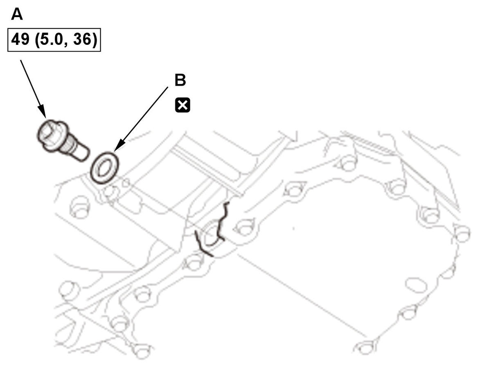
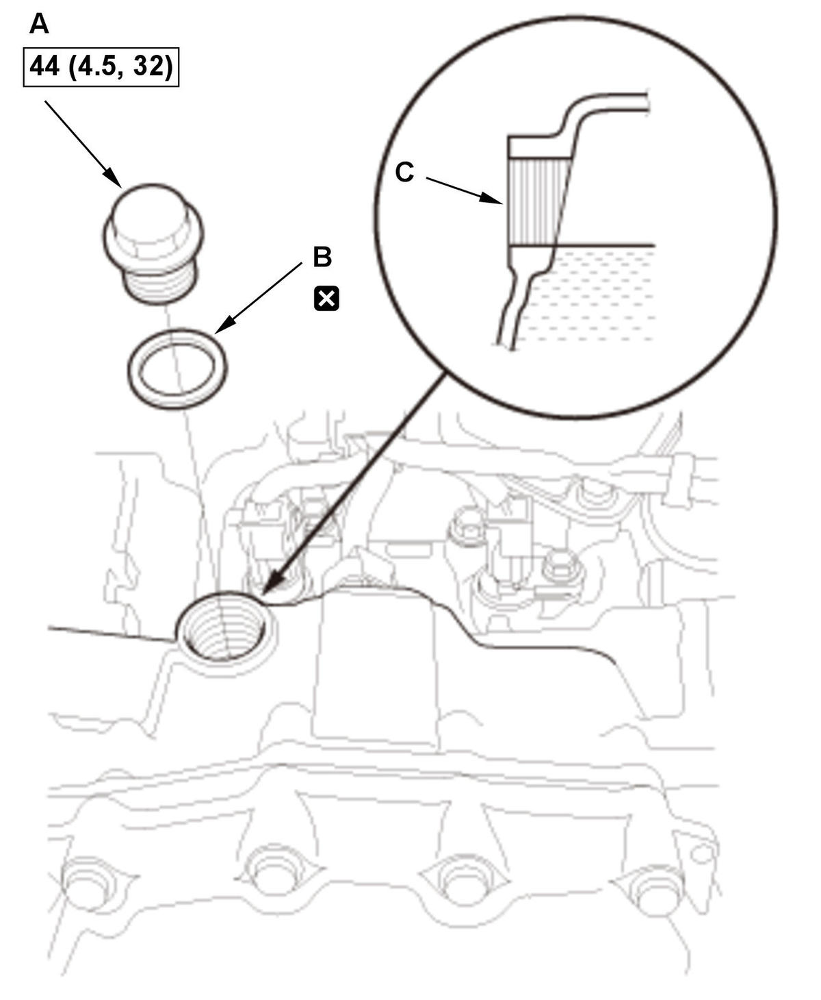

Transmission Fluid (HCF-2) Replacement (K20C2 (CVT)): Replacement
NOTE:
- How to read the torque specifications .
- Keep all foreign particles out of the transmission.
- Vehicle - Lift
- Engine Undercover Plate - Remove
- Engine - Warm Up
1. Start the engine, and warm it up to normal operating temperature (the radiator fan comes on twice). 2. Turn the engine off.
- Transmission Fluid - Drain

Courtesy of HONDA, U.S.A., INC.1. Remove the drain plug (A) with the sealing washer (B), and drain the transmission fluid for at least 5 minutes.
NOTE:- Be careful not to burn yourself by the hot part.
- Remove metal particles from the magnetic surface of the drain plug.
2. Reinstall the drain plug with a new sealing washer.
- Transmission Fluid - Refill
1. Remove the filler plug (A) with the sealing washer (B).
NOTE: Be careful not to burn yourself by the hot part.
2. Refill the transmission with the recommended fluid into the filler plug hole (C) until transmission fluid overflows. Always use Honda HCF-2 Continuously Variable Transmission Fluid.
NOTE: Using the wrong type of fluid will damage the transmission.
Transmission Fluid (HCF-2) Capacity: 3.5 L (3.7 US qt) at change 4.3 L (4.5 US qt) at oil pan, valve body assembly, and transmission fluid pump removal, installation, and replacement* 5.8 L (6.1 US qt) at overhaul NOTE: *Reference transmission fluid (HCF-2) capacity when working time is 30 minutes. The actual transmission fluid (HCF-2) capacity will vary from the specified capacity based on the length of time the transmission fluid pan is off the transmission. Avoid leaving the transmission fluid pan off for extend periods of time.
3. Temporarily install the filler plug with the sealing washer.
- Transmission Fluid - Add

Courtesy of HONDA, U.S.A., INC.NOTE: Add transmission fluid after the shift lever operation without spending too much time. 1. Lower the vehicle.
2. Start the engine, and warm it up to normal operating temperature (the radiator fan comes on twice).
3. While pressing the brake pedal firmly, shift in turn the transmission to P→R→N→D→S→L→S→D→N→R→P position/mode (without paddle shifter)/P→R→N→D→S→D→N→R→P position/mode (with paddle shifter), and wait for at least 3 seconds to each position/mode.
4. Turn the engine off.
5. Remove the filler plug (A) and the sealing washer (B).
NOTE: Be careful not to burn yourself by the hot part.
6. Add the transmission with the recommended fluid into the filler plug hole (C) until transmission fluid overflows. Always use Honda HCF-2 Continuously Variable Transmission Fluid.
NOTE: Using the wrong type of fluid will damage the transmission.
7. Reinstall the filler plug with a new sealing washer.
- All Removed Parts - Install
1. Install the parts in the reverse order of removal. - Maintenance Minder - Reset (With Maintenance Minder System)
1. If the Maintenance Minder required to replace the transmission fluid, reset the Maintenance Minder with the gauge (see "Resetting the Maintenance Minder") . If the Maintenance Minder did not require to replace the transmission fluid, reset the Maintenance Minder with the HDS (see "Resetting the Individual Maintenance Items") .